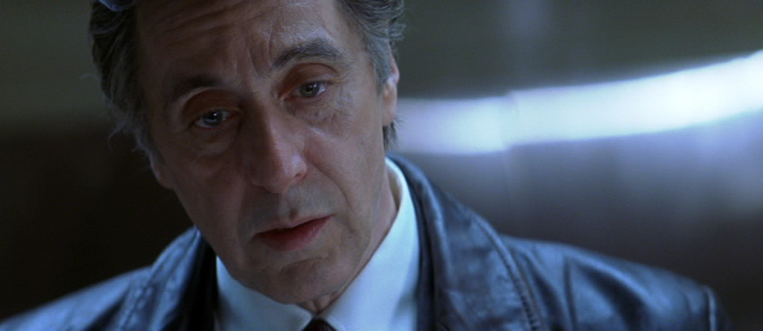
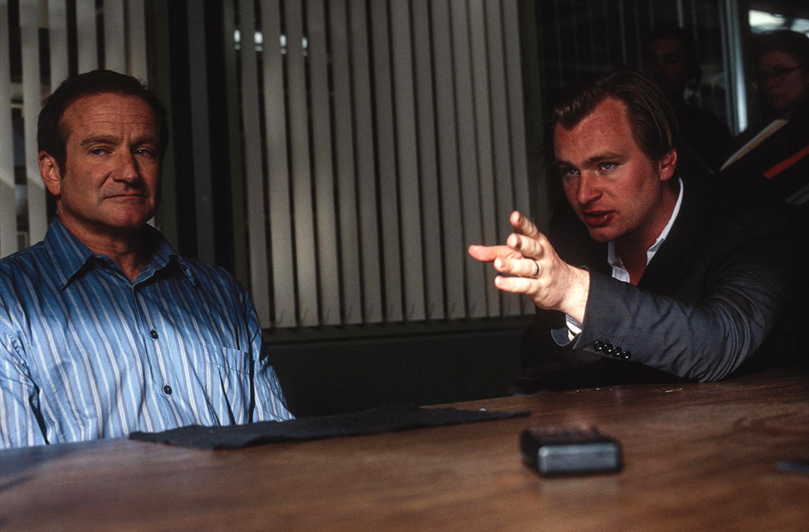

Imsomnia เกมเขย่าขั้วอำมหิต
เนื้อเรื่อง
ผู้เชี่ยวชาญด้านการทำผิดในลอสแองเจลิสสองคนถูกส่งตัวไปยังเมืองทางตอนเหนือที่ดวงอาทิตย์ไม่ได้ตั้งเป้าเพื่อสอบสวนการฆาตกรรมที่เป็นระบบของวัยรุ่นที่อยู่ใกล้ ๆ ใน Nightmute, Alaska พบว่า Kay Connell ผู้เช่าอายุสิบเจ็ดปีถูกประหารชีวิต ในแง่ของหัวหน้าตำรวจ Nightmute ที่อยู่ใกล้ ๆ นักอาชญาวิทยาตำรวจ Los Angeles Robbery Homicide สองคนคือ Will Dormer และ Hap Eckhart เพื่อช่วยในการประเมิน แต่โดดเด่นในโลกของตำรวจทั้งดอร์เมอร์และเอคฮาร์ตกำลังท้าทายประเด็นหลักในลอสแองเจลิส ใน Nightmute Dormer มีเหตุการณ์สำคัญที่เกิดขึ้นจากปัญหาการพักผ่อนอันเนื่องมาจากการผสมผสานของดวงอาทิตย์เวลา 12.00 น. ที่เป็นพัก ๆ และจากความลับที่เขากำลังส่งต่อ
ในเมืองไนท์มิวท์ รัฐอลาสก้า สหรัฐอเมริกา สาวน้อยวัย 17 ปีถูกฆาตกรรมปริศนา ร้อนถึง วิลล์ ดอร์มเมอร์ และ ฮาป เอ็คฮาร์ต สองเจ้าหน้าที่ตำรวจลอส แองเจลิสต้องเดินทางมาช่วยไขคดี ทั้ง ๆ ที่พวกเขามีเหตุขัดแย้งบางอย่างกันอยู่ แถมดอร์มเมอร์ยังต้องรับมือกับอาการนอนไม่หลับที่หนักข้อขึ้น ขนาดเห็นภาพหลอนของฆาตกรตัวจริง ที่พยายามแทรกเข้ามาในหัวเพื่อพยายามบอกว่ามันล่วงรู้ความลับอะไรบางอย่างที่เขาพยายามซ่อนไว้ ความสัมพันธ์ที่ต้องช่วยปกปิดความลับและความจริงระหว่างนายตำรวจกับผู้ร้ายจึงเริ่มขึ้น แต่สุดท้ายการเข้ามาของนักสืบสาว เอลลี่ เบอร์ จะช่วยปะติดปะต่อเรื่องราวทั้งหมด และคลี่คลายปริศนาที่น่าสงสัยด้วยตัวของเธอเอง

การผลิตและกำกับ
เกมเขย่าขั้วอำมหิต เป็นภาพยนตร์ระทึกขวัญทางจิตวิทยาของอเมริกันที่ออกฉายในปี ค.ศ. 2002 กำกับภาพยนตร์โดย คริสโตเฟอร์ โนแลน และเขียนโดย ฮิลลารี ซีตซ์ นำแสดงโดย อัล ปาชิโน, โรบิน วิลเลียมส์, ฮิลารี สแวงก์, เมาร่า เทียร์นีย์, มาร์ติน โดโนแวน, นิคกี้ แคตต์ และ พอล ดูลีย์ และสร้างจากภาพยนตร์นอร์เวย์ปี ค.ศ. 1997 ที่มีชื่อเดียวกัน ภาพยนตร์เรื่องนี้บอกเล่าเรื่องราวของสองนักสืบคดีฆาตกรรมลอสแอนเจลิสเพื่อสอบสวนคดีฆาตกรรมใน ไนท์มิวต์, รัฐอะแลสกา ภาพยนตร์เรื่องนี้ออกฉายในสหรัฐอเมริกาเมื่อวันที่ 24 พฤษภาคม ค.ศ. 2545 เกมเขย่าขั้วอำมหิต ทำรายได้ทั่วโลกไป 113 ล้านดอลลาร์สหรัฐเทียบกับงบประมาณการผลิต 46 ล้านดอลลาร์สหรัฐและได้รับคำชื่นชมอย่างมากสำหรับบทภาพยนตร์ การกำกับภาพยนตร์ ทิศทางและการแสดง โดยเฉพาะอย่างยิ่งการแสดงของ ปาชิโน และ วิลเลียมส์